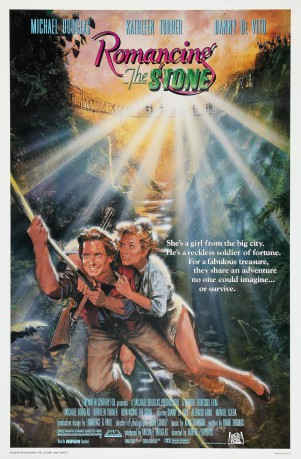

#1711 Die Jagd nach dem grünen Diamanten
Alternativ: Romancing the Stone
Auszeichnungen: für 1 Oscars nominiert 2 GoldenGlobes gewonnen
 
 IMDB-Wertung: 6.9 / 10
IMDB-Wertung: 6.9 / 10  Metascore: 63
Metascore: 63 
Joan Wilder, a mousy romance novelist, receives a treasure map in the mail from her recently murdered brother-in-law. Meanwhile, her sister Elaine is kidnapped in Colombia and the two criminals responsible demand that she travel to Colombia to exchange the map for her sister. Joan does, and quickly becomes lost in the jungle after being waylayed by Zolo, a vicious and corrupt Colombian cop who will stop at nothing to obtain the map. There, she meets an irreverent soldier-of-fortune named Jack Colton who agrees to bring her back to civilization. Together, they embark upon an adventure that could be straight out of Joan's novels.
Jahr: 1984
Dauer: 106 Minuten
FSK: 12
Land: USA Studio: 20th Century FoxTonspuren: DTS - ,
Untertitel: Deutsch, Englisch,
Auflösung: 720p (1280x544) Größe: 6696 MB
Genre: Action, Abenteuer, Komödie, Liebe
Regisseur:  Robert Zemeckis
Robert Zemeckis
Drehbuch: Diane Thomas, Lem Dobbs, Howard Franklin, Treva Silverman
Soundtrack: Alan Silvestri
Darsteller:
Datei: X:\2-Dilogie(A-F)\Auf der Jagd nach\Jagd nach dem grünen Diamanten, Die (1984, FSK12, 1280x544).mkv seit 09.08.2015
Festplatte: HD Collection-2(A-Z)-3(A-M)
 Alle Filme aus Gruppe '2-Dilogie(A-F)\Auf der Jagd nach'
Alle Filme aus Gruppe '2-Dilogie(A-F)\Auf der Jagd nach'